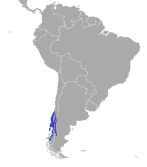

El término "pudú" proviene del mapudungun püdu o püdü, nombre usado para la especie del Cono Sur (Pudu puda).
Actualmente solo se conoce una especie del género:
Pudu puda
Taxonomía
- Reino: Animalia
- Subreino: Eumetazoa
- Superfilo: Deuterostomia
- Filo: Chordata
- Familia: Cervidae
La especie Pudu puda, de la que el género toma el nombre, solo se encuentra en el sudoeste de la Argentina y en el centro-sur de Chile.
En la Argentina, su presencia se extiende desde el suroeste de Neuquén hasta el suroeste de Santa Cruz.
En Chile, se presenta en poblaciones aisladas, desde la ciudad de Curicó hasta la Región del Biobío y en forma continua desde la Región de la Araucanía hasta la Región de Aysén.
Su alimentación la constituyen hojas, hierbas y una amplia gama de vegetales de la región en la que habitan.

Tras doscientos a doscientos diez días de gestación, la hembra construye una cama de hojas donde pare normalmente una sola cría, que al nacer es de color pardo rojizo con manchas blanquecinas en el lomo y los muslos, las que desaparecen aproximadamente a los tres meses de edad.